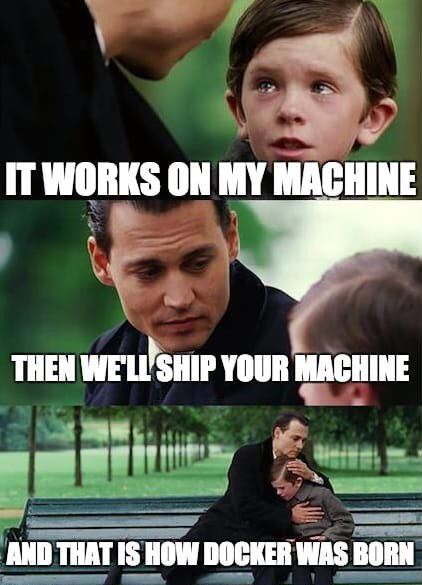
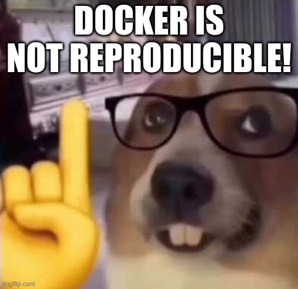
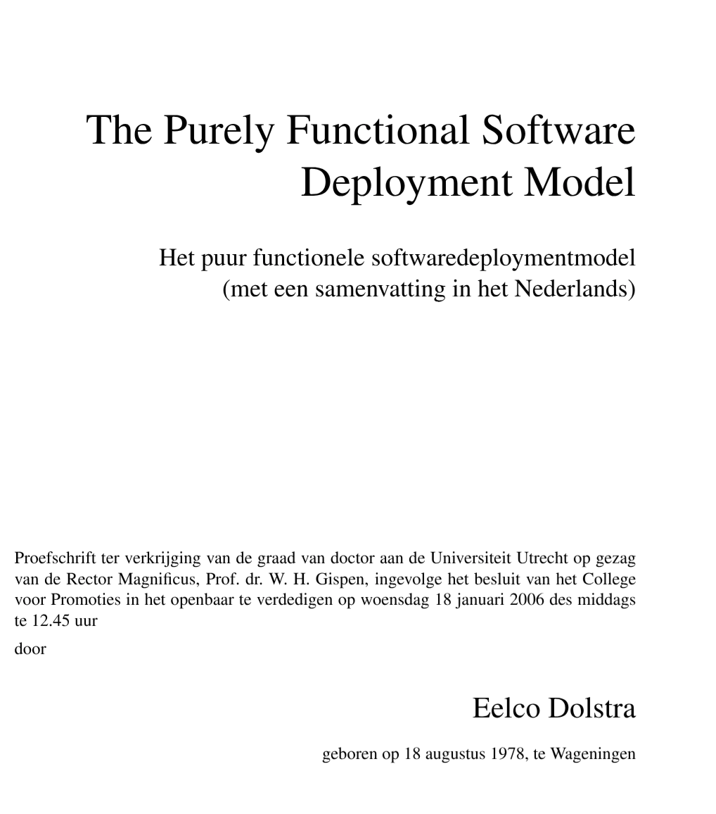
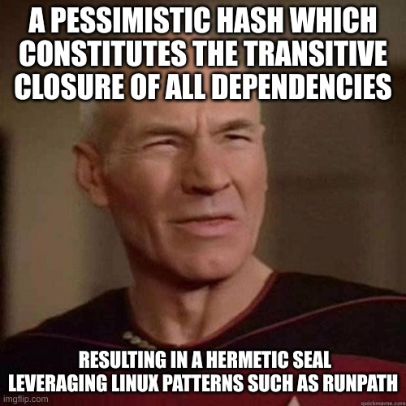

A cure for your 7 page HowTo
Almut Lütge, almut.luetge@sdsc.ethz.ch
Gabriel Nützi, gabriel.nuetzi@sdsc.ethz.ch
Cyril Matthey-Doret, cyril.matthey-doret@epfl.ch
Aug 31st, 2026, Repository, Slides
“I hope […] it convinces you to see your home environment as your career-long companion and thus worthy of a long-running personal project.”
— Luc Perkins - Determinate Systems Blog
How to use these slides:
Thanks to the following contributors:
Gabriel Nützi for the workshop, patiently teaching nix and reviewing.
Cyril Matthey-Doret for the workshop and reviewing.
SDSC ORDES Team for feedback.
Farid Zakaria for giving the talk at PlanetNix 2025 which we integrated into this talk.
The Nix Community at
Slides and the original workshop can be found here:
You start python and you get this:
>>> import numpy
Segmentation fault (core dumped)

| Feature | Local Development | Mamba | Devcontainer | Nix/DevShell |
|---|---|---|---|---|
| Maintenance | ⚠️ High | ⚠️ Medium | ⚠️ Medium | ⚠️ Medium |
| Reproducibility | ❌ Low | ⚠️ Medium | ⚠️ Medium | ✅ Very high |
| Ease of Use | ❌ Low | ✅ Easy | ✅ Ok | ❌ Low |
| Dep. Mgmt. | ❌ | ✅ | ⚠️ | ✅ |
| Portability | 💣 | ⚠️ | ✅ | ✅ |
| CI Stability | 💣 | ⚠️ | ⚠️ | ✅ Almost Perfect |


Main projects related to Nix:
🎁 Nix(Package Manager): Turns a configuration into a software application.
💬 Nix(Programming Language): Functional programming language to write a software/system configuration.
📦 Nixpkgs: Standard library for Nix + build functions for >140k packages.
💻 NixOS: Declarative Linux distribution.
I am building a script to find my IP:
#! /usr/bin/env bash
curl -s http://ipinfo.io | jq --raw-output .ip12.24.14.88What guarantees that jq or curl is
available?
let
system = builtins.currentSystem; # e.g. `x86_64-linux`
# Download something into the `/nix/store/...-source`
src = builtins.fetchTarball
"https://github.com/NixOS/nixpkgs/archive/9684b53175fc6c09581e94cc85f05ab77464c7e3.tar.gz";
# Import the `default.nix` in the `/nix/store/...-source`
f = import src;
pkgs = f { inherit system; }; # This is the package attribute set of `nixpkgs`.
in
pkgs.writeShellScriptBin "what-is-my-ip" ''
${pkgs.curl}/bin/curl -s http://ipinfo.io | \
${pkgs.jq}/bin/jq --raw-output .ip
''Building this Nix code gives you a store path:
nix build -f ./examples/what-is-my-ip.nix --print-out-paths
> "/nix/store/7x9hf9g95d4wjjvq853x25jhakki63bz-what-is-my-ip"which contains the script and all needed dependencies
#!/nix/store/mc4485g4apaqzjx59dsmqscls1zc3p2w-bash-5.2p37/bin/bash
/nix/store/zl7h70n70g5m57iw5pa8gqkxz6y0zfcf-curl-8.12.1-bin/bin/curl \
-s "http://ipinfo.io" | \
/nix/store/y50rkdixqzgdgnps2vrc8g0f0kyvpb9w-jq-1.7.1-bin/bin/jq \
--raw-output ".ip"Nix has encoded the used executables with
store paths (/nix/store).
/nix/store/7x9hf9g95d4wjjvq853x25jhakki63bz-what-is-my-ipThe hash 7x9hf9g95d4wjjvq853x25jhakki63bz of your built
package depends on:
curl, jq)nix code,
including dependencies)⛓️ Deterministic software packaging.
Getting back to: whats-is-my-ip.nix:
let
system = builtins.currentSystem; # e.g. `x86_64-linux`
# Download something into the `/nix/store/...-source`
src = builtins.fetchTarball
"https://github.com/NixOS/nixpkgs/archive/9684b53175fc6c09581e94cc85f05ab77464c7e3.tar.gz";
# Import the `default.nix` in the `/nix/store/...-source`
f = import src;
pkgs = f { inherit system; }; # This is the package attribute set of `nixpkgs`.
in
pkgs.writeShellScriptBin "what-is-my-ip" ''
${pkgs.curl}/bin/curl -s http://ipinfo.io | \
${pkgs.jq}/bin/jq --raw-output .ip
''github.com/NixOS/nixpkgs ? nixpgkgs is a mono-repository with Nix
code to build software packages (> 130k).

A commit in nixpkgs represents the
version of all packages at that
commit (a big tree).
pkgs.writeShellScriptBin "what-is-my-ip" ''
${pkgs.curl}/bin/curl -s http://ipinfo.io | \
${pkgs.jq}/bin/jq --raw-output .ip
''pkgs.writeShellScriptBin is a trivial builder
function around the derivation
command (see
appendix).provides a deterministic way to manage dependencies and configurations [1].
comes with a flake.lock file which
locks dependencies.
Remember fetchTarball ".../NixOS/nixpkgs/..."
in what-is-my-ip.nix.
🌻 A flake.nix
is a better method for locked inputs.
A flake flake.nix:
# flake.nix
{
inputs = { /* ... */ };
outputs = inputs: {
packages = /* implementation */
# ... other output attributes ...
}
}| Output | What it does | Invoked with |
|---|---|---|
packages.<system>.<name> |
Buildable derivation — the installable package | nix build .#name |
devShells.<system>.<name> |
Reproducible shell with dev dependencies in $PATH |
nix develop |
apps.<system>.<name> |
Executable entry point for the flake | nix run .#name |
nixosConfigurations.<host> /
homeConfigurations.<name> |
Full system or user-level declarative config | nixos-rebuild switch /
home-manager switch |
Foundation of a flake.nix and integration of a Nix
shell. Simpler approach with devenv.nix.
Nix community is flourishing - contribute or support it:
We maintain well-structured, state-of-the-art,
nix-enabled repository templates for toolchains
like:
The templates provide CI out of the box and are ready to use!
🌍 Tackling non-reproducible software distribution is hard — but essential
🚀 Embrace Nix to gain
🤝 The Nix community is welcoming and supportive — don’t hesitate to ask!
✅ Check the references/resources provided (🤷♀️ sometimes its a mess, but gets better).
Domain-specific functional language (no side-effects).
Structurally similar to JSON but with functions.
Fundamental data types such as string,
integer, path, list, and
attribute set.
Lazy Evaluated: expression evaluation delayed until needed.
⚠️Specifically designed for deterministic/reproducible software deployment.
A derivation is a
specialized attribute set, describes how to build a Nix package.
{ type = "derivation"; ... }Check nix repl -f <nixpkgs> and type
pkgs.curl.type.
A derivation is a build instruction to realize a package in the
/nix/storeusing a specialderivationfunction.
- Can depend on multiple other derivations.
- Produce one or more outputs.
The complete set of dependencies required to build a derivation—including its transitive dependencies—is called a closure. [Ref]
Evaluating: Store build
instructions in the /nix/store
(a store derivation
*.drv, more details).
Building: Realizing outputs of
the derivation in the /nix/store. This can literally be
anything!
github.com/NixOS/nixpkgs ?f = import src; imports default.nix from nixpkgs
[1]
f.pkgs for your system (e.g
"x86_64-linux").Its a Nix derivation in the output attribute set
devShells of the flake.nix:
{
inputs = { /* ... */ };
outputs = inputs: {
packages.x86_64-linux = {
mytool = /* derivation */
};
devShells.x86_64-linux = {
banana-shell = /* derivation */
};
# ... other outputs ...
}
}The banana-shell derivation is meant to be consumed by
nix develop.
devenv.sh for Nix DevShells🚧 Nix DevShells from nixpkgs
(pkgs.mkShell) are raw and too
simplistic.
🌻Nix DevShells from devenv.sh provides more concise
configuration.
NixOS (NixOS Modules).In maths a fix point x of a function F is
defined as:
\[ x = F(x). \]
In functional programming a fix-point combinator
fix is a higher-order function.
It returns the
fix point of a function F:
fix = F: let x = F x in xThat is how recursive self-referential sets can be defined.
let
fix = F: let x = F x in x;
# Define the constructor of the set.
newSet = self: { path = "/bin"; full = self.path + "/my-app"; };
mySet = fix newSet; # fulfills: mySet == fix mySet;
in
mySet.fullSeems recursive in let x = F x but but isn’t
🤯, because its lazy evaluated. What you need to know about laziness..
Used in pkgs.callPackage in nixpkgs.
The choice for lazy evaluation allows us to write Nix expressions in a convenient and elegant style: Packages are described by Nix expressions and these Nix expressions can freely be passed around in a Nix program – as long as we do not access the contents of the package, no evaluation and thus no build will occur. […] At the call site of a function, we can supply all potential dependencies without having to worry that unneeded dependencies might be evaluated. For instance, the whole of the Nix packages collection is essentially one attribute set where each attribute maps to one package contained in the collection. It is very convenient that at this point, we do not have to deal with the administration of what exactly will be needed where. Another benefit is that we can easily store meta information with packages, such as name, version number, homepage, license, description and maintainer. Without any extra effort, we can access such meta-information without having to build the whole package. [Paper]
derivationThis is what pkgs.writeShellScriptBin would expand to:
(see ./examples/what-is-my-ip-orig.nix):
derivation {
inherit system;
name = "what-is-my-ip";
builder = "/bin/sh";
args = [
"-c"
''
${pkgs.coreutils}/bin/mkdir -p $out/bin
{
echo '#!/bin/sh'
echo '${pkgs.curl}/bin/curl -s http://ipinfo.io | \
${pkgs.jq}/bin/jq --raw-output .ip'
} > $out/bin/what-is-my-ip
${pkgs.coreutils}/bin/chmod +x $out/bin/what-is-my-ip
''
];
outputs = [ "out" ];
}A store derivation (
*.drv) contains only build instructions for Nix to realize/build it. This can be literally anything, e.g. a software package, a wrapper shell script or only source files.
# Evaluate it.
drvPath=$(nix eval "./examples/flake-simple#packages.x86_64-linux.mytool" --raw)
# Realize it.
nix build -L "$drvPath" --print-out-paths --out-link ./mytoolnix eval "./examples/flake-simple#packages.x86_64-linux.mytool"
> «derivation /nix/store/l8pma77py04gd5819zkk3h7jx0bgxqgm-mytool.drv»./examples/flake-simple#packages.x86_64-linux.mytool is
an installable. More later!
# Inspect the store derivation.
cat /nix/store/l8pma77py04gd5819zkk3h7jx0bgxqgm-mytool.drv> Derive([("out","/nix/store/5rvqlxk2vx0hx1yk8qdll2l8l62pfn8n-treefmt","","")],
[("/nix/store/1fmb3b4cmr1bl1v6vgr8plw15rqw5jhf-treefmt.toml.drv",["out"]),
("/nix/store/3avbfsh9rjq8psqbbplv2da6dr679cib-treefmt-2.1.0.drv",["out"]),
("/nix/store/61fjldjpjn6n8b037xkvvrgjv4q8myhl-bash-5.2p37.drv",["out"]),
("/nix/store/gp6gh2jn0x7y7shdvvwxlza4r5bmh211-stdenv-linux.drv",["out"])]
,["/nix/store/v6x3cs394jgqfbi0a42pam708flxaphh-default-builder.sh"]
,"x86_64-linux","/nix/store/8vpg72ik2kgxfj05lc56hkqrdrfl8xi9-bash-5.2p37/bin/bash",
["-e","/nix/store/v6x3cs394jgqfbi0a42pam708flxaphh-default-builder.sh"],
[ ("__structuredAttrs",""),("allowSubstitutes",""),
("buildCommand","target=$out/bin/treefmt\nmkdir -p \"$(dirname \"$target\")\"\n\nif [ -e \"$textPath\" ]; then\n mv \"$textPath\" \"$target\"\nelse\n echo -n \"$text\" > \"$target\"\nfi\n\nif [ -n \"$executable\" ]; then\n chmod +x \"$target\"\nfi\n\neval \"$checkPhase\"\n"),("buildInputs",""),("builder","/nix/store/8vpg72ik2kgxfj05lc56hkqrdrfl8xi9-bash-5.2p37/bin/bash"),("checkPhase","/nix/store/8vpg72ik2kgxfj05lc56hkqrdrfl8xi9-bash-5.2p37/bin/bash -n -O extglob \"$target\"\n"),("cmakeFlags",""),("configureFlags",""),("depsBuildBuild",""),("depsBuildBuildPropagated",""),("depsBuildTarget",""),("depsBuildTargetPropagated",""),("depsHostHost",""),("depsHostHostPropagated",""),("depsTargetTarget",""),("depsTargetTargetPropagated",""),("doCheck",""),("doInstallCheck",""),("enableParallelBuilding","1"),("enableParallelChecking","1"),("enableParallelInstalling","1"),("executable","1"),("mesonFlags",""),("name","treefmt"),("nativeBuildInputs",""),("out","/nix/store/5rvqlxk2vx0hx1yk8qdll2l8l62pfn8n-treefmt"),("outputs","out"),("passAsFile","buildCommand text"),("patches",""),("preferLocalBuild","1"),("propagatedBuildInputs",""),("propagatedNativeBuildInputs",""),("stdenv","/nix/store/hsxp8g7zdr6wxk1mp812g8nbzvajzn4w-stdenv-linux"),("strictDeps",""),("system","x86_64-linux"),("text","#!/nix/store/8vpg72ik2kgxfj05lc56hkqrdrfl8xi9-bash-5.2p37/bin/bash\nset -euo pipefail\nunset PRJ_ROOT\nexec /nix/store/0jcp33pgf85arjv3nbghws34mrmy7qq5-treefmt-2.1.0/bin/treefmt \\\n --config-file=/nix/store/qk8rqccch6slk037dhnprryqwi8mv0xs-treefmt.toml \\\n --tree-root-file=.git/config \\\n \"$@\"\n\n")])JSON output of the above:
nix derivation show /nix/store/l8pma77py04gd5819zkk3h7jx0bgxqgm-mytool.drv{
"/nix/store/l8pma77py04gd5819zkk3h7jx0bgxqgm-mytool.drv": {
"args": [
"-e",
"/nix/store/vj1c3wf9c11a0qs6p3ymfvrnsdgsdcbq-source-stdenv.sh",
"/nix/store/shkw4qm9qcw5sc5n1k5jznc83ny02r39-default-builder.sh"
],
"builder": "/nix/store/9nw8b61s8lfdn8fkabxhbz0s775gjhbr-bash-5.2p37/bin/bash",
"env": {
"__structuredAttrs": "",
"allowSubstitutes": "",
"buildCommand": "target=$out/bin/mytool\nmkdir -p \"$(dirname \"$target\")\"\n\nif [ -e \"$textPath\" ]; then\n mv \"$textPath\" \"$target\"\nelse\n echo -n \"$text\" > \"$target\"\nfi\n\nif [ -n \"$executable\" ]; then\n chmod +x \"$target\"\nfi\n\neval \"$checkPhase\"\n",
"buildInputs": "",
"builder": "/nix/store/9nw8b61s8lfdn8fkabxhbz0s775gjhbr-bash-5.2p37/bin/bash",
"checkPhase": "/nix/store/9nw8b61s8lfdn8fkabxhbz0s775gjhbr-bash-5.2p37/bin/bash -n -O extglob \"$target\"\n",
"cmakeFlags": "",
"configureFlags": "",
"depsBuildBuild": "",
"depsBuildBuildPropagated": "",
"depsBuildTarget": "",
"depsBuildTargetPropagated": "",
"depsHostHost": "",
"depsHostHostPropagated": "",
"depsTargetTarget": "",
"depsTargetTargetPropagated": "",
"doCheck": "",
"doInstallCheck": "",
"enableParallelBuilding": "1",
"enableParallelChecking": "1",
"enableParallelInstalling": "1",
"executable": "1",
"mesonFlags": "",
"name": "mytool",
"nativeBuildInputs": "",
"out": "/nix/store/blm702jzcwfppwrrj9925ivd9gxp4c9n-mytool",
"outputs": "out",
"passAsFile": "buildCommand text",
"patches": "",
"preferLocalBuild": "1",
"propagatedBuildInputs": "",
"propagatedNativeBuildInputs": "",
"stdenv": "/nix/store/npp9k9062ny7w0k1i03ij6xvqb7vhvjh-stdenv-linux",
"strictDeps": "",
"system": "x86_64-linux",
"text": "#!/nix/store/9nw8b61s8lfdn8fkabxhbz0s775gjhbr-bash-5.2p37/bin/bash\n\"/nix/store/xkk1gr9bw2dbdjna8391rj1zl1l3dmhq-cowsay-3.8.4/bin/cowsay\" \"Hello there ;)\"\necho \"-------------------------------------\"\n\"/nix/store/4ydiim4lfk6nyab4pdkjj9s33pgbigfd-figlet-2.2.5/bin/figlet\" \"Do you expect\"\n\"/nix/store/4ydiim4lfk6nyab4pdkjj9s33pgbigfd-figlet-2.2.5/bin/figlet\" \"something \"\n\"/nix/store/4ydiim4lfk6nyab4pdkjj9s33pgbigfd-figlet-2.2.5/bin/figlet\" \"useful ? \"\n\n"
},
"inputDrvs": {
"/nix/store/1fsd2cb5ab7ci01ks4j0gbbq254jw6sk-stdenv-linux.drv": {
"dynamicOutputs": {},
"outputs": ["out"]
},
"/nix/store/lrf9kbhlaf5mkvnlf3zr9wzvk7c2z72l-bash-5.2p37.drv": {
"dynamicOutputs": {},
"outputs": ["out"]
},
"/nix/store/phq4wh4490manblg905xixpc3gvwr149-figlet-2.2.5.drv": {
"dynamicOutputs": {},
"outputs": ["out"]
},
"/nix/store/wdpicivrj0bmzh935rr1hm1vlk18j0mp-cowsay-3.8.4.drv": {
"dynamicOutputs": {},
"outputs": ["out"]
}
},
"inputSrcs": [
"/nix/store/shkw4qm9qcw5sc5n1k5jznc83ny02r39-default-builder.sh",
"/nix/store/vj1c3wf9c11a0qs6p3ymfvrnsdgsdcbq-source-stdenv.sh"
],
"name": "mytool",
"outputs": {
"out": {
"path": "/nix/store/blm702jzcwfppwrrj9925ivd9gxp4c9n-mytool"
}
},
"system": "x86_64-linux"
}
}The path
./examples/flake-simple#packages.x86_64-linux.mytool is
referred to as a Flake output attribute installable, or simply an installable.
An installable is a Flake output that can be realized in the Nix store.
./examples/flake-simple refers to this
repository’s flake.nix
directory.packages.x86_64-linux.mytool following
# is an output attribute defined within the flake.Most modern Nix commands accept
installables as input, making them a fundamental
concept in working with Flakes. You should only use the modern
commands, e.g. nix <subcommand>. Stay away
from the command nix-env.
Nix distinguishes between
strings: just text,strings with context : text + set
of references to store paths.Strings with context are always created when derivations are involved:
{pkgs, ...}: {
mytool = pkgs.writeShellScriptBin "tool"
# String with context, due to referencing `pkgs.coreutils`:
''
echo "hello" | "${pkgs.coreutils}/bin/tee" -a test.log
'';
}Note: Use builtins.getContext to
inspect a string with context.